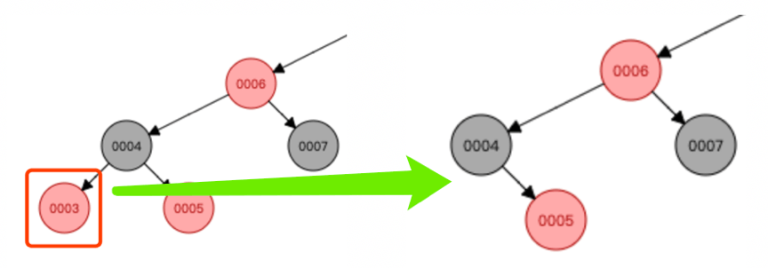
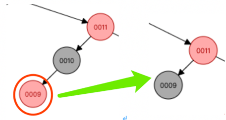

删除图示与变换调整
准备好，我们开始吧； 变换调整是为了满足红黑树的 2 条重要特性：
- 从任一节点到其每个叶子的所有路径都包含相同数目的黑色节点；
- 任何相邻的节点都不能同时为红色，也就是红色节点被黑色节点隔开。
注意：这里的待删节点是通过转变后的待删节点，也就是至多只有一个孩子节点的情况，千万不要在这里混淆了，否则就没得玩了；
如果还晕，请重复上面的过程，直到明白了，再继续往下，这是非常关键的一步。
我们关注待删节点，待删节点分为红黑 2 个颜色状态
1 待删节点是红色
待删节点是红色，那么直接拿该节点的孩子补空位即可；（孩子必定是黑色，没有孩子时，我们想象其有一个虚拟的黑色节点）
此时删除红色节点，不会违反红黑树特性。

待删节点是红色，到这里我们已经处理完毕。
2 待删节点是黑色
如果待删节点是黑色，删除后破坏了（从任一节点到其每个叶子的所有路径都包含相同数目的黑色节点）；
此时我们需要对其孩子节点 child 进行判断。
铭记：到这里了待删节点就只有一个孩子，没有孩子就想象成有一个虚拟的黑色的孩子
孩子节点 child 分为红黑 2 个颜色状态
2.1 child 是红色
此情况那么很好办，将待删节点替换成 child，并将 child 颜色染成黑色，红黑树性质恢复，此时我们处理完毕；

2.2 child 是黑色
child 是黑色（没有孩子时，想象有一个黑色的虚拟节点），此时我们进入最难的部分了；
这里的调整分为了好几大类，不再好细分了，所以下面单独设一个二级标题。